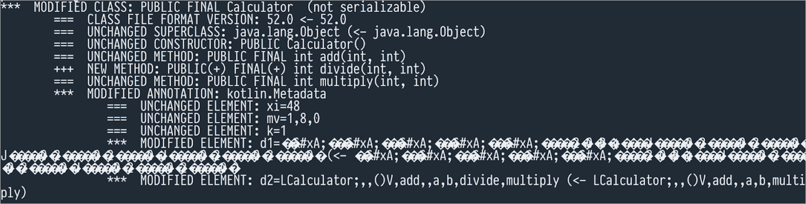

反向兼容性
This chapter contains considerations about backward compatibility. Here are the "don't do" recommendations:
- Don't add arguments to existing API functions
- Don't use data classes in an API
- Don't make return types narrower
Consider using:
Learn about the tools designed to enforce backward compatibility.
Definition of backward compatibility
One of the cornerstones of a good API is backward compatibility. Backward-compatible code allows clients of newer API versions to use the same API code that they used with an older API version. This section describes the main points you should think about to make your API backward-compatible.
There are at least three types of compatibility when talking about APIs:
- Source
- Behavioral
- Binary
Read more about compatibility types
You can count versions of a library as source-compatible when you're sure that your client's application will recompile correctly against a newer version of your library. Usually, it's difficult to implement and check this automatically unless the changes are trivial. In any API, there are always corner cases where source compatibility might be broken by a particular change.
Behavioral compatibility ensures that any new code does not change the semantics of the original code behavior, apart from fixing bugs.
A binary backward-compatible version of a library can replace a previously compiled version of the library. Any software that was compiled against the previous version of the library should continue to work correctly.
It's possible to break binary compatibility without breaking source compatibility, and vice versa.
Some principles of keeping binary backward compatibility are obvious: Don't just remove parts of a public API; instead, deprecate them. The following sections contain lesser-known principles.
"Don't do" recommendations
Don't add arguments to existing API functions
Adding non-default arguments to a public API is a breaking change because the existing code won't have enough information to call the updated methods. Adding even default arguments might also break your users' code.
Breaking backward compatibility is shown below in an example of two classes: lib.kt representing a "library",
and client.kt representing a "client" of this "library". This construct for libraries and their clients is common
in real-world applications. In this example, the "library" has one function that computes the fifth member of
the Fibonacci sequence. The file lib.kt contains:
fun fib() = … // Returns the fifth element
Let's call this function from another file, client.kt:
fun main() {
println(fib()) // Returns 3
}
Let's compile the classes:
kotlinc lib.kt client.kt
The compilation results in two files: LibKt.class and ClientKt.class.
Let's call the client to make sure that it works:
$ kotlin ClientKt.class
3
The design is far from perfect and hardcoded for learning purposes. It predefines what element of the sequence you want to obtain, which is incorrect and doesn't follow clean code principles. Let's rewrite it preserving the same default behavior: It will return the fifth element by default, but now it will be possible to provide an element number that you want to get.
lib.kt:
fun fib(numberOfElement: Int = 5) = … // Returns requested member
Let's recompile only the "library": kotlinc lib.kt.
Let's run the "client":
$ kotlin ClientKt.class
The result is:
Exception in thread "main" java.lang.NoSuchMethodError: 'int LibKt.fib()'
at LibKt.main(fib.kt:2)
at LibKt.main(fib.kt)
…
There is a NoSuchMethodError because the signature of the fib() function changed after compilation.
If you recompile client.kt, it will work again because it will be aware of the new signature. In this example,
binary compatibility was broken while preserving source compatibility.
Learn more about what happened with the help of decompilation
This explanation is JVM-specific.
Let's call javap on the LibKt class before
the changes:
❯ javap LibKt
Compiled from "lib.kt"
public final class LibKt {
public static final int fib();
}
And after the changes:
❯ javap LibKt
Compiled from "lib.kt"
public final class LibKt {
public static final int fib(int);
public static int fib$default(int, int, java.lang.Object);
}
The method with the signature public static final int fib() was replaced with a new method with the signature
public static final int fib(int) . At the same time, a proxy method fib$default delegates the execution to fib(int).
For the JVM, it's possible to work around this: You need to add a @JvmOverloads
annotation. For multiplatform projects, there is no workaround.
Don't use data classes in an API
Data classes are tempting to use because they are short, concise, and provide some nice functionality out of the box. However, because of some specifics of how data classes work, it's better not to use them in library APIs. Almost any change makes the API not backward-compatible.
Usually, it's difficult to predict how you will need to change a class over time. Even if today you think that it's self-contained, there is no way to be sure that your needs won't change in the future. So, all the issues with data classes only arise when you decide to change such a class.
First, the considerations from the previous section, Don't add arguments to existing API functions, also apply to the constructor as it is also a method. Second, even if you add secondary constructors, it won't solve the compatibility problem. Let's look at the following data class:
data class User(
val name: String,
val email: String
)
For example, over time, you understand that users should go through an activation procedure, so you want to add a new field, "active", with a default value equal to "true". This new field should allow the existing code to work mostly without changes.
As it was already discussed in the section above, you can't just add a new field like this:
data class User(
val name: String,
val email: String,
val active: Boolean = true
)
Because this change is not binary-compatible.
Let's add a new constructor that accepts only two arguments and calls the primary constructor with a third default argument:
data class User(
val name: String,
val email: String,
val active: Boolean = true
) {
constructor(name: String, email: String) :
this(name, email, active = true)
}
This time there are two constructors, and a signature of one of them matches the constructor of the class before the change:
public User(java.lang.String, java.lang.String);
But the issue is not with the constructor – it's with the copy function. Its signature has changed from:
public final User copy(java.lang.String, java.lang.String);
To:
public final User copy(java.lang.String, java.lang.String, boolean);
And it has made the code binary-incompatible.
Of course, it's possible just to add a property inside the data class, but that would remove all the bonuses of it being a data class. Therefore, it's better not to use data classes in your API because almost any change in them breaks source, binary, or behavioral compatibility.
If you have to use a data class for whatever reason, you have to override the constructor and the copy() method.
In addition, if you add a field into the class's body, you have to override the hashCode() and equals() methods.
It's always an incompatible change to swap the order of arguments because of
componentX()methods. It breaks source compatibility and probably will break binary compatibility, too.
Don't make return types narrower
Sometimes, especially when you don't use explicit API mode,
a return type declaration can change implicitly. But even if that's not the case, you might want to narrow the signature.
For example, you might realize that you need index access to the elements of your collection and want to change
the return type from Collection to List. Widening a return type usually breaks source compatibility; for example,
converting from List to Collection breaks all the code that uses index access. Narrowing return types is usually
a source-compatible change, but it breaks binary compatibility, and this section describes how.
Consider a library function in the library.kt file:
public fun x(): Number = 3
And an example of its use in the client.kt file:
fun main() {
println(x()) // Prints 3
}
Let's compile it with kotlinc library.kt client.kt and make sure that it works:
$ kotlin ClientKt
3
Let's change the return type of the "library" function x() from Number to Int:
fun x(): Int = 3
And recompile only the client: kotlinc client.kt. ClientKt doesn't work as expected anymore. It doesn't print 3
and throws an exception instead:
Exception in thread "main" java.lang.NoSuchMethodError: 'java.lang.Number Library.x()'
at ClientKt.main(call.kt:2)
at ClientKt.main(call.kt)
…
This happens because of the following line in bytecode:
0: invokestatic #12 // Method Library.x:()Ljava/lang/Number;
This line means that you call the static method x() returning the type Number. But there is no longer such a method,
and so binary compatibility has been violated.
The @PublishedApi annotation
Sometimes, you might need to use a part of your internal API to implement inline functions.
You can do this with the @PublishedApi annotation.
You should treat parts of code annotated with @PublishedApi as parts of a public API, and, therefore, you should
be careful about their backward compatibility.
The @RequiresOptIn annotation
Sometimes, you might want to experiment with your API. In Kotlin, there is a nice way to define that some API is
unstable – by using the @RequiresOptIn annotation.
However, be aware of the following:
- If you haven't changed a part of your API for a long time and it's stable, you should reconsider using the
@RequiresOptInannotation. - You may use the
@RequiresOptInannotation to define different guarantees to different parts of the API: Preview, Experimental, Internal, Delicate, or Alpha, Beta, RC. - You should explicitly define what each level means, write KDoc comments, and add a warning message.
If you depend on an API requiring opt-in, don't use the @OptIn annotation. Instead, use the @RequiresOptIn
annotation so that your user is able to consciously choose which API they want to use and which not.
Another example of @RequiresOptIn is when you want to explicitly warn users about the usage of some API. For example,
if you maintain a library that utilizes Kotlin reflection, you can annotate classes in this library
with @RequiresFullKotlinReflection.
Explicit API mode
You should try to keep your API as transparent as possible. To force the API to be transparent, use the explicit API mode.
Kotlin gives you vast freedom in how you can write code. It is possible to omit type definitions, visibility declarations, or documentation. The explicit API mode forces you as a developer to make implicit things explicit. By the link above, you can find out how to enable it. Let's try to understand why you might need it:
Without an explicit API, it's easier to break backward compatibility:
// version 1 fun getToken() = 1 // version 1.1 fun getToken() = "1"The return type of
getToken()changes, but you don't even need to update the signature for it to break users' code. They expect to getInt, but they getString.The same applies to visibility. If the
getToken()function isprivate, then backward compatibility is not broken. But without an explicit visibility declaration, it's unclear whether an API user should be able to access it. If they should be able to, it should be declared aspublicand documented; in this case, the change breaks backward compatibility. If not, it should be defined asprivateorinternal, and this change won't be breaking.
Tools designed to enforce backward compatibility
Backward compatibility is a crucial aspect of software development, as it ensures that new versions of a library or framework can be used with existing code without causing any issues. Maintaining backward compatibility can be a difficult and time-consuming task, especially when dealing with a large codebase or complex APIs. It's hard to control it manually, and developers often have to rely on testing and manual inspection to ensure that changes do not break existing code. To address this issue, JetBrains created the Binary compatibility validator, and there is also another solution: japicmp.
At the moment, both work only for the JVM.
Both solutions have their advantages and disadvantages. japicmp works for any JVM language, and it's both a CLI tool and a build system plugin. However, it requires having both old and new applications packaged as JAR files. It's not that easy to use when you don't have access to older builds of your library. Also, japicmp gives information on changes in Kotlin metadata, which you may not need (because a metadata format is not specified and is considered to be used only for Kotlin internal usage).
The Binary compatibility validator works only as a Gradle plugin, and it is on the Alpha stability level. It doesn't need access to JAR files. It only needs specific dumps of the previous API and the current API. It's capable of collecting these dumps itself. Learn more about these tools below.
Binary compatibility validator
The Binary compatibility validator is a tool that helps you ensure the backward compatibility of your libraries and frameworks by automatically detecting and reporting any breaking changes in the API. The tool analyzes the library's bytecode before and after you made changes and compares the two versions to identify any changes that may break existing code. This makes it easy to detect and fix any issues before they become a problem for your users.
This tool can save a significant amount of time and effort that you would otherwise spend on manual testing and inspection. It can also help prevent issues that may arise due to breaking changes in the API. This can ultimately lead to a better user experience, as users will be able to rely on the stability and compatibility of the library or framework.
japicmp
If you target only the JVM as your platform, you can also use japicmp. japicmp operates on a different level from the Binary compatibility validator: It compares two jar files – old and new – and reports incompatibilities between them.
Be aware that japicmp reports not only incompatibilities but also changes that should not affect a user in any way. For example, consider the following code:
class Calculator {
fun add(a: Int, b: Int): Int = a + b
fun multiply(a: Int, b: Int): Int = a * b
}
If you add a new method without breaking the compatibility like this:
class Calculator {
fun add(a: Int, b: Int): Int = a + b
fun multiply(a: Int, b: Int): Int = a * b
fun divide(a: Int, b: Int): Int = a / b
}
Then japicmp reports the following change:

It's just a change in the @Metadata annotation, which isn't very interesting, but japicmp is JVM-language agnostic and
has to report everything it sees.